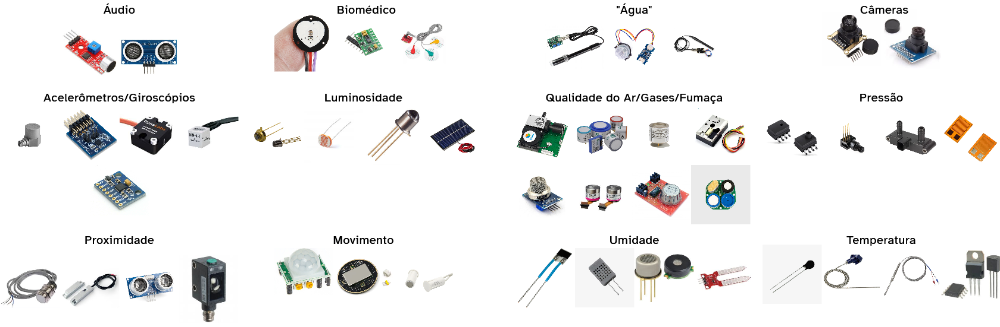

Definições de IoT
Histórico
Desde os tempos mais remotos da computação, digo, a partir do momento em que conseguimos ter redes de computadores, temos procurado formas de acessar diversos dispositivos de forma remota. Um dos primeiros exemplares disso é a “Máquina de Coca-Cola da Universidade de Carnegie Mellon”, feita em 1982, que, a partir de um comando na rede Unix da Instituição, respondia com um relatório simples as bebidas que ainda estavam disponíveis. Outro exemplo clássico é a primeira webcam feita em 1991, que foi criada para ficar de olho em uma jarra de café. Os dois casos, foram movidos pela preguiça dos pesquisadores em se movimentar e descobrir que não encontrariam o que queriam.
Apesar de já existirem alguns dispositivos conectados à rede, o termo Internet of Things, é cunhado só em 1999, e passa por uma grande evolução de conceitos desde então. O seu progresso foi impulsionado principalmente pelos avanços na miniaturização de sensores, controladores e tecnologias de comunicação sem fio, lembrando também do IPV6, que permitiu um maior número de dispositívos conectados a mesma rede.
Hoje, entendemos IoT como a integração entre dispositivos físicos e sistemas digitais possibilitando a coleta, processamento e compartilhamento contínuo de dados em tempo real.
O que é IoT?
Minha definição:
\[\text{"Coisas"} + \begin{pmatrix} Sensores\\ Controladores\\ Atuadores \end{pmatrix} + \text{Internet}\]IoT pode ser entendida como a “coisas”: equipamentos diversos e objetos do dia a dia, que tenham integrados em si sensores, controladores e alguma forma de conexão com a internet.
Sensores
sentem o ambiente
Os sensores são os seus “sentidos”: tato, olfato, visão, etc.
Eles são os componentes fundamentais que permitem a um dispositivo converter estímulos como luz, som, movimento e temperatura em sinais elétricos que poderemos interpretar.
A capacidade de coleta de dados do ambiente é o que torna a IoT tão poderosa, permitindo desde a automação residencial até o monitoramento industrial complexo.

Atuadores
Inteferem no ambiente
Enquanto os sensores permitem que os sistemas de IoT “sintam” o mundo, os atuadores são os componentes que lhes permitem “agir”. Quando disparamos um comando para esses equipamentos, isso será convertido em uma ação física no mundo real. Seja movendo, aquecendo, iluminando ou emitindo som.

Controladores
tomam decisões
Por fim no coração de todo dispositivo de Internet das Coisas (IoT) existe um controlador, o componente responsável pelo processamento, controle e comunicação. A seleção de uma categoria de controlador é uma decisão de projeto, regida pelas necessidades da aplicação.
Na figura que mostra os controladores, podemos ver que existem grandes diferenças entre os controladores para IoT de Consumo (CIoT) [Muito utilizados em projetos DIY e hobby] e aqueles utilizados em IoT Industrial (IIoT).
Sentiremsos o impacto dessas diferenças em seu custo, poder de processamento e nível de especialização.

IoT em Setores Específicos
A escolha de um controlador depende diretamente dos desafios e requisitos do setor de aplicação. Os campos da saúde e da agricultura, por exemplo, utilizam todo o espectro de controladores para atender às suas necessidades únicas.
IoT Médica (IoMT - Internet of Medical Things)
A IoMT exige altíssima confiabilidade, segurança de dados, certificação rigorosa e, frequentemente, miniaturização e baixo consumo de energia.
- Microcontroladores: Wearables, baixo consumo e portabilidade.
- SBCs: Monitores de leito, telas e integração de dados.
- FPGAs: Imagem de alta velocidade (Ultrassom/RM).
- Controladores Médicos: Suporte à vida e operação à prova de falhas.
- Protocolos: BLE (sensores), Wi-Fi (monitores), Ethernet/DICOM (imagens e alta criticidade).
IoT Agrícola (Agri-IoT ou Agricultura Inteligente)
A Agri-IoT enfrenta desafios como ambientes externos hostis, necessidade de comunicação a longa distância e a busca por soluções de baixo custo para implantação em larga escala.
- Microcontroladores: Sensores de campo, baixo consumo (bateria) e monitoramento de solo/clima.
- Comunicação por protocolos de longo alcance como LoRa
- SBCs: Gateways de dados e processamento de imagens em drones agrícolas.
- PLCs: Automação de maquinário pesado (tratores/colheitadeiras) e controle de silos/irrigação.
- Protocolos: LoRaWAN/Sigfox (campo aberto), 4G/5G/Satélite (nuvem), CAN bus/ISOBUS (máquinas).
IoT Logistico
- Tags/Etiquetas (Passivas): Etiquetas RFID e NFC para identificação de pacotes e paletes (sem bateria, alimentadas pelo leitor).
- Microcontroladores (Ativos): Dispositivos de monitoramento de carga (Dataloggers) que medem temperatura e impacto em tempo real, usando BLE ou LoRa.
- SBCs: Cérebro de robôs autônomos (AMRs) e gateways que processam o inventário lido por antenas RFID.
- PLCs: Automação pesada, como sorters (classificadores), esteiras e elevadores de carga.
- Protocolos: RFID/NFC (curtíssimo alcance), Zigbee/BLE (galpão) e 5G (rastreio externo).
Para saber mais:
-
Gubbi, J., Buyya, R., Marusic, S., & Palaniswami, M. (2013). Internet of Things (IoT): A Vision, Architectural Elements, and Future Directions. Future Generation Computer Systems, 29(7), 1645–1660.
-
Ashton, K. (2009). That ‘Internet of Things’ Thing. RFID Journal.
-
IEEE Internet of Things. (2024). IEEE Internet of Things Initiative Overview. IEEE.
-
Evans, D. (2011). The Internet of Things — How the Next Evolution of the Internet Is Changing Everything. Cisco Internet Business Solutions Group (IBSG).
-
Madakam, S., Ramaswamy, R., & Tripathi, S. (2015). Internet of Things (IoT): A Literature Review. Journal of Computer and Communications, 3(5), 164–173.
-
CMU SCS COKE MACHINE HOME PAGE. Carnegie Mellon University, School of Computer Science. https://www.cs.cmu.edu/~coke/.